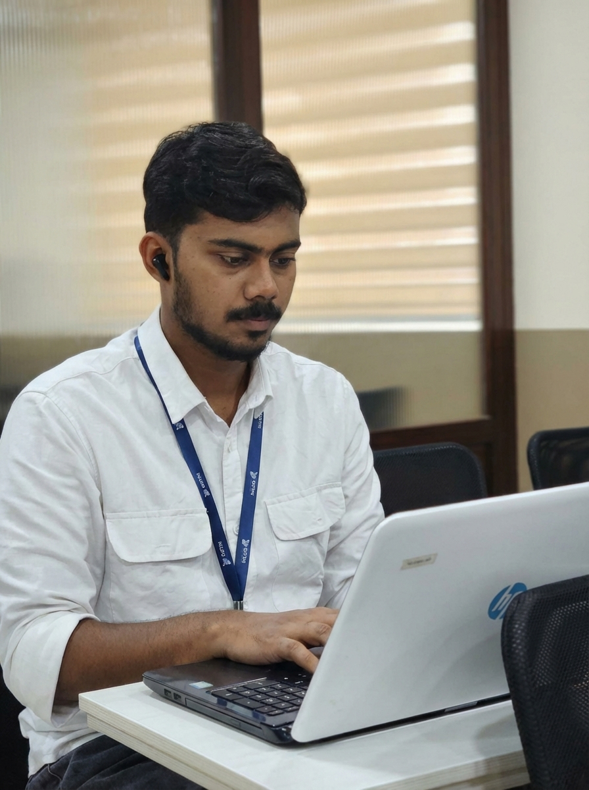

Muhammed Anshid Chelakodan: A leading Digital Marketing Strategist in Malappuram helping Kerala's businesses thrive with data-driven marketing.
I’m Anshid Chelakodan, a Digital Marketing Strategist in Malappuram and Kerala passionate about helping businesses grow through smart and data-driven online strategies.
I specialize in SEO, Social Media Marketing, Google Ads, and content strategy — blending creativity with data to build strong digital identities that attract the right audience.
My focus is always on delivering measurable results. From optimizing websites for search engines to creating performance-driven marketing campaigns, I help brands improve visibility, increase engagement, and generate real business growth online.
I provide professional digital marketing services in Malappuram for startups, entrepreneurs, and local businesses looking to strengthen their digital presence. From crafting Google Ads campaigns to detailed SEO audits, I cover it all.
Whether it's boosting website traffic, improving search rankings (like my 200% Organic Growth project), or launching campaigns that connect with customers — my goal is simple: turn your business ideas into real digital impact.
If you're looking for a Digital Marketing Strategist in Malappuram who understands both creativity and performance, let's collaborate. Check out my portfolio to see my work in action or read my latest blog posts.

Transforming ambitious brands through ethical, data-backed, and creatively fearless digital strategies that don't just yield clicks, but capture market dominance.
To redefine performance marketing for Kerala's landscape, setting the gold standard for how local businesses scale to global visibility through specialized expertise.
The Ultimate Marketing Equation
My professional journey so far
An intensive undergraduate program specializing in Classical Arabic literature, linguistics, and deep cultural research. This academic foundation has provided me with exceptional interpretive skills and a disciplined approach to research—skills that are critical in digital strategy.
Advanced training in the architecture of high-performance digital campaigns. Gained core practical knowledge in advanced SEO, performance-driven Google Ads (PPC), and Meta Lead Generation.
Hands-on experience managing multi-channel social media platforms for diverse business sectors. Developed a data-driven understanding of consumer psychology, keyword mapping, and engagement cycles.
Providing independent growth consulting for Kerala-based businesses. I help local brands bridge the gap between traditional business and modern performance marketing via hyper-local SEO and custom digital roadmaps.